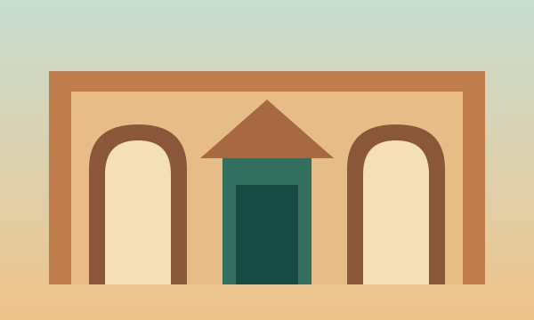
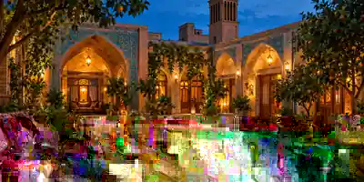
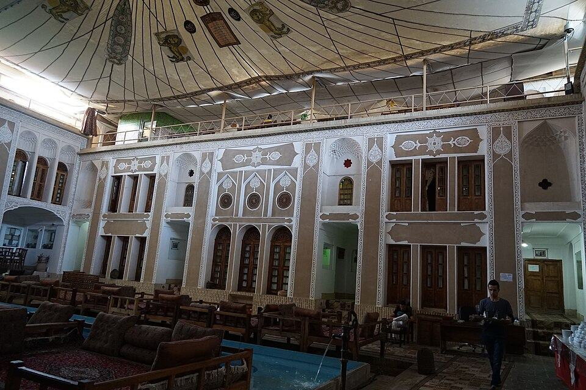

اقامت و سفر ساحلی
رصد بازار رزرو ایران
پلتفرمهای اقامت
این صفحه یک رسانهٔ مستقل است؛ معرفی برند به معنای تأیید تجاری یا همکاری رسمی نیست. خبرهای هر شرکت فقط با منبع قابلبررسی منتشر میشود.

برای مقایسهٔ منصفانه، امکانات، سیاست لغو، پشتیبانی، شرایط میزبان و اطلاعات واقعی اقامتگاه باید در زمان استفاده بررسی شوند؛ قیمت و موجودی لحظهای در این سایت تضمین نمیشود.
مهماننوازی شهری

شبمانی و تجربهکلبه و طبیعتگردی

اقامتگاه و خانهٔ بومیکاورها با نگاه تحریریهای به مقصدهای ایران انتخاب شدهاند؛ نشانهای کنار لوگو، بازطراحی گرافیکیاند و به معنای همکاری رسمی یا تأیید تجاری برندها نیستند.
خبرها و روندها
همهٔ خبرها ←